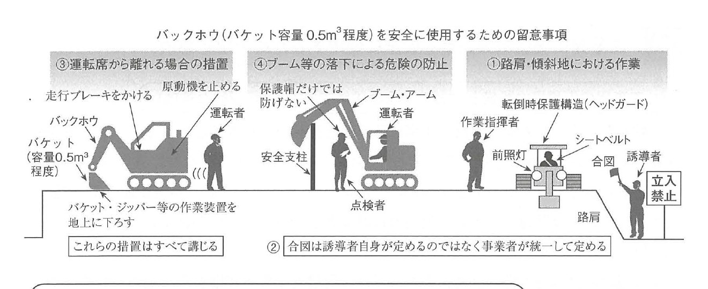
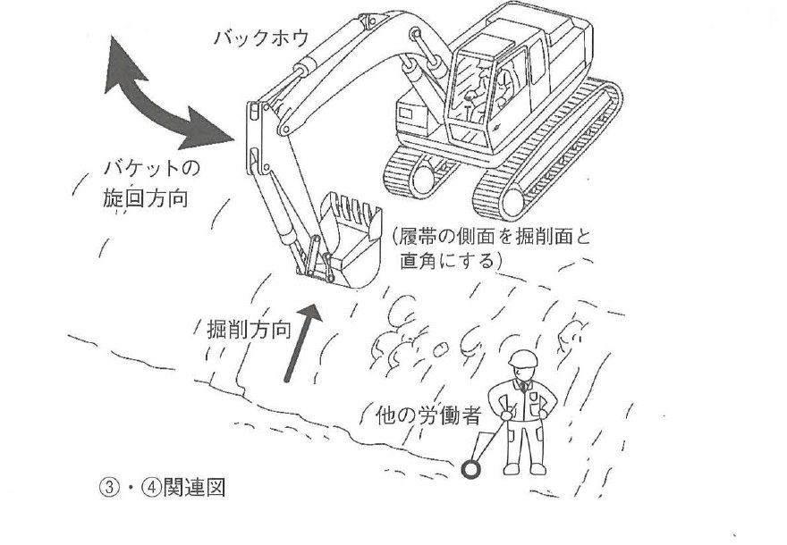
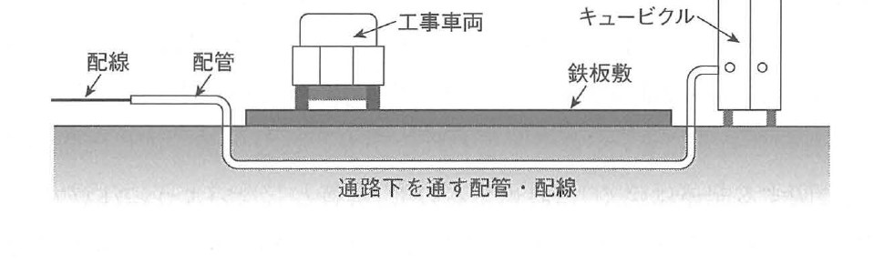
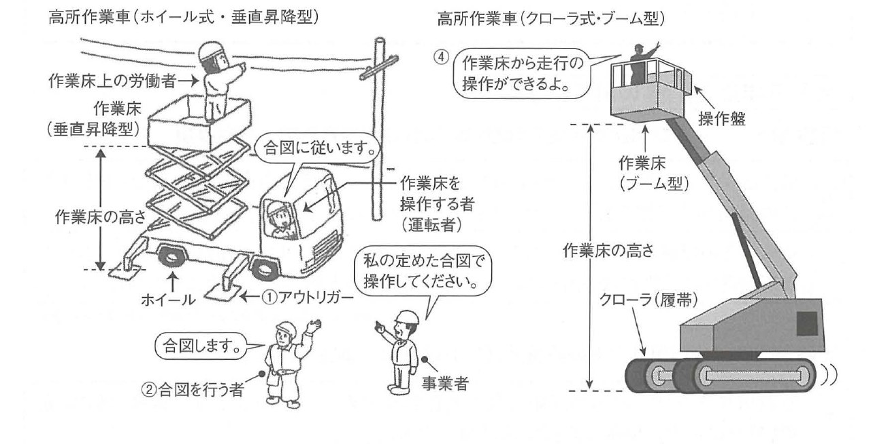

原文
建築工事における次の1.から3.の設備又は機械を安全に使用するための留意事項を、それぞれ2つ具体的に記述しなさい。
ただし、1.から3.の解答はすべて異なる内容の記述とし、保護帽や要求性能墜落制止用器具等の保護具の使用、気象条件、資格、免許及び届出に関する記述は除くものとする。
また、使用資機材に不良品はないものとし、2.を除き保守点検に関する記述は不可とする。
- バケット容量 0.5m³程度のバックホウ
- 工事用の仮設電力設備
- ホイール式垂直昇降型の高所作業車
建築工事における次の1.から3.の設備又は機械を安全に使用するための留意事項を、それぞれ2つ具体的に記述しなさい。
ただし、1.から3.の解答はすべて異なる内容の記述とし、保護帽や要求性能墜落制止用器具等の保護具の使用、気象条件、資格、免許及び届出に関する記述は除くものとする。
また、使用資機材に不良品はないものとし、2.を除き保守点検に関する記述は不可とする。
Đối với từng thiết bị hoặc máy móc từ 1 đến 3 dưới đây được sử dụng trong công trình xây dựng, hãy trình bày cụ thể 2 điểm cần lưu ý để sử dụng an toàn.
Nội dung trả lời cho mục 1 đến 3 phải khác nhau. Không được trả lời về việc sử dụng phương tiện bảo hộ như mũ bảo hộ và dụng cụ chống rơi có tính năng theo yêu cầu, điều kiện thời tiết, chứng chỉ, giấy phép hoặc thủ tục khai báo.
Giả định máy móc, thiết bị và vật tư sử dụng không có sản phẩm lỗi. Ngoại trừ mục 2, không được trình bày về bảo dưỡng hoặc kiểm tra định kỳ.
① 路肩・傾斜地で転倒・転落のおそれがある場合は、事業者が一定の合図を定め、誘導者を配置してその合図を行わせる。
② 運転者が運転席から離れるときは、「バケットを地上に下ろす」・「原動機を止める」・「走行ブレーキをかける」の措置をすべて行わせる。
出典：労働安全衛生規則
① 仮設電力設備の配線は、通路面において使用しない。やむを得ず使用するときは、重量物の通過による絶縁被覆の損傷を防止する。
② 架空吊下げ電灯には、口金との接触による感電・電球の破損による負傷を防止するため、ガードを取り付ける。
出典：労働安全衛生規則
① 転倒・転落防止のため、アウトリガーを張り出し、地盤の不同沈下や路肩の崩壊を防止する。
② 高所作業車を走行させるときは、作業床から労働者を降ろす。やむを得ず労働者を載せて走行させるときは、一定の合図を定め、誘導者にその合図を行わせる。
出典：労働安全衛生規則
① Khi làm việc tại lề đường hoặc nền dốc có nguy cơ máy bị lật hoặc rơi, đơn vị sử dụng lao động phải quy định tín hiệu thống nhất, bố trí người hướng dẫn và yêu cầu người này thực hiện tín hiệu đó.
② Khi người vận hành rời ghế lái, phải thực hiện hạ gầu xuống đất, dừng động cơ và kéo phanh di chuyển, đồng thời không được bỏ sót bất kỳ biện pháp nào.
Nguồn trong sách: Quy tắc An toàn và Vệ sinh lao động
① Dây dẫn của hệ thống điện tạm không được bố trí trên bề mặt lối đi. Nếu không thể tránh được, phải ngăn lớp cách điện bị hư hỏng do vật nặng đi qua.
② Đối với đèn treo trên cao, phải lắp lồng bảo vệ để phòng điện giật do tiếp xúc với đui đèn và phòng thương tích do bóng đèn bị vỡ.
Nguồn trong sách: Quy tắc An toàn và Vệ sinh lao động
① Để phòng xe bị lật hoặc rơi, phải triển khai chân chống, phòng lún không đều của nền và phòng sụp lở lề đường.
② Khi cho xe chạy, phải cho người lao động xuống khỏi sàn công tác. Nếu bắt buộc phải chở người khi chạy, phải quy định tín hiệu thống nhất và bố trí người hướng dẫn thực hiện tín hiệu đó.
Nguồn trong sách: Quy tắc An toàn và Vệ sinh lao động
バックホウは、労働安全衛生規則上の車両系建設機械（動力を用いて不特定の場所に自走することができる建設機械）の一種である。ショベルが下向きに装着されているので、自機の位置よりも低い場所の掘削や水中掘削に適している。
バケット容量は、0.01m³程度から1.4m³程度までと多様である。バケット容量 0.5m³程度のバックホウは、概ね標準的な（スタンダードの）バックホウであると考えられる。
Backhoe là một loại máy xây dựng tự hành theo Quy tắc An toàn và Vệ sinh lao động, tức máy xây dựng sử dụng động lực và có thể tự di chuyển tại các địa điểm không cố định. Do gầu xúc được lắp hướng xuống dưới, máy thích hợp để đào tại vị trí thấp hơn vị trí đặt máy và đào dưới nước.
Dung tích gầu rất đa dạng, từ khoảng 0,01 m³ đến 1,4 m³. Backhoe có dung tích gầu khoảng 0,5 m³ được xem là loại tiêu chuẩn thông thường.
バックホウを安全に使用するための留意事項としては、労働安全衛生規則に定められている「車両系建設機械の使用に係る危険の防止」から、任意の事項を抜き出して記述すればよい。その際には、「車両系建設機械」の文字を「バックホウ」に変更したうえで、ある程度の要約をして記述することが望ましい。
なお、問題文に書かれている通り、保護帽・保護具・気象条件・資格・免許・届出・資機材・保守点検に関する記述を解答としてはならないことには、十分に注意する必要がある。
① 路肩・傾斜地などで転倒または転落のおそれがあるときは、誘導者を配置し、その者にバックホウを誘導させる。
② 誘導者を置くときは、事業者が一定の合図を定め、誘導者にその合図を行わせる。
③ 運転者が運転位置から離れるときは、作業装置を地上に下ろす・原動機を止める・走行ブレーキをかけるの3つの措置をすべて講じさせなければならない。
④ ブーム・アームなどを上げ、その下で修理・点検などの作業を行うときは、安全支柱・安全ブロックなどを使用させる。
Khi viết các điểm an toàn của backhoe, có thể lựa chọn nội dung phù hợp từ phần “Phòng ngừa nguy hiểm liên quan đến việc sử dụng máy xây dựng tự hành” trong Quy tắc An toàn và Vệ sinh lao động. Nên thay thuật ngữ chung “máy xây dựng tự hành” bằng “backhoe”, rồi tóm lược ở mức phù hợp.
Phải đặc biệt chú ý không sử dụng làm đáp án các nội dung về mũ và phương tiện bảo hộ, điều kiện thời tiết, chứng chỉ, giấy phép, khai báo, máy móc vật tư, bảo dưỡng hoặc kiểm tra.
① Khi làm việc tại lề đường hoặc nền dốc có nguy cơ máy bị lật hoặc rơi, phải bố trí người hướng dẫn và yêu cầu người đó hướng dẫn backhoe.
② Khi bố trí người hướng dẫn, đơn vị sử dụng lao động phải quy định tín hiệu thống nhất và yêu cầu người hướng dẫn thực hiện tín hiệu đó.
③ Khi người vận hành rời vị trí điều khiển, phải hạ bộ phận công tác xuống đất, dừng động cơ và kéo phanh di chuyển; cả ba biện pháp đều bắt buộc.
④ Khi sửa chữa hoặc kiểm tra bên dưới boom hay arm đang nâng, phải sử dụng thanh chống an toàn hoặc khối chặn an toàn.
次の事項は、車両系建設機械に共通する留意事項というよりも、バックホウ特有の留意事項として、やや専門的な内容に属するものである。
① バックホウは、オペレータ側に向いたショベルを有し、オペレータは掘削土砂を自分側に引き寄せる方向に操作する。積込みのための旋回中は、立入禁止区域を設定して柵を設置し、誘導者の合図で旋回する。
② バックホウは土の掘削機械であるため、掘削以外の用途に使用してはならない。バケットに労働者を載せて運ぶ、クレーン作業を代行させる、盛土を均す、締固めをする、杭を打ち込むことは厳禁である。
③ 掘削方向は、履帯と平行にし、履帯の側面を掘削面と直角にする。傾斜地では、盛土を行うなどの方法でバックホウを水平に設置する。
④ 土砂を積み込むときのバケットの旋回方向は、ダンプトラック運転席上など、他の労働者の頭上を通過しない方向とする。
Các nội dung sau mang tính chuyên môn hơn vì là điểm lưu ý riêng của backhoe, thay vì quy định chung cho mọi máy xây dựng tự hành.
① Backhoe có gầu hướng về phía người vận hành và kéo đất đào về phía máy. Trong khi quay để xúc đất lên phương tiện vận chuyển, phải thiết lập khu vực cấm vào, lắp hàng rào và quay máy theo tín hiệu của người hướng dẫn.
② Vì backhoe là máy đào đất, không được sử dụng cho mục đích ngoài công tác đào. Nghiêm cấm chở người trong gầu, dùng thay cần cẩu, dùng gầu để san đất đắp, đầm chặt hoặc đóng cọc.
③ Hướng đào phải song song với dải xích, còn mặt bên của dải xích phải vuông góc với mặt đào. Trên nền dốc, phải đắp bù hoặc áp dụng biện pháp tương tự để đặt backhoe nằm ngang.
④ Hướng quay của gầu phải không đi qua phía trên đầu người lao động khác, chẳng hạn phía trên cabin xe ben.


Hình trên liên kết bốn nhóm nguy cơ và biện pháp: mất ổn định ở lề đường hoặc nền dốc; thiếu thống nhất tín hiệu; máy tự chạy khi người vận hành rời ghế; boom hoặc arm hạ bất ngờ. Hình dưới làm rõ quan hệ giữa hướng đào, tư thế dải xích và vùng quay của gầu.
一般的な建設工事の現場では、工事に使用する機械を動作させるためや、工事の安全を確保するために、電力が必要になることが多い。しかし、建設工事の現場にコンセントがあるわけではないので、電気配線を引き込み、受電するための仮設物を設置し、仮設の電灯などを配置する必要がある。
こうした電気配線・仮設物・電灯などは、「工事用の仮設電力設備」と呼ばれている。計画にあたっては、労働安全衛生規則などに定められた事項を遵守し、漏電・感電・火災などの事故防止に努めなければならない。
Tại công trường xây dựng thông thường, điện năng cần thiết để vận hành máy móc và bảo đảm an toàn, chẳng hạn duy trì độ rọi cần thiết. Do công trường không phải nơi có sẵn các ổ cắm phù hợp, phải kéo dây điện vào công trường, lắp thiết bị tạm để tiếp nhận điện và bố trí đèn chiếu sáng tạm.
Các hệ thống dây điện, thiết bị tạm và đèn tạm này được gọi chung là “hệ thống điện tạm phục vụ thi công”. Khi lập kế hoạch phải tuân thủ Quy tắc An toàn và Vệ sinh lao động, đồng thời phòng rò điện, điện giật và hỏa hoạn.
工事用の仮設電力設備を安全に使用するための留意事項としては、労働安全衛生規則に定められている「電気による危険の防止」から、直接関係のある事項を抜き出して記述すればよい。その際には、「電気機械器具」の文字を「仮設電力設備」に変更したうえで、ある程度の要約をして記述することが望ましい。
① 労働者が作業中または通行中に接触・接近することにより感電のおそれがある充電部分には、感電防止用の囲いまたは絶縁覆いを設ける。
② 仮設の配線または移動電線は、通路面において使用してはならない。ただし、車両などの通過による絶縁被覆の損傷のおそれがない状態で使用するときは、この限りでない。
③ 手持型の電灯・架空吊下げ電灯には、口金との接触による感電および電球の破損による危険を防止するため、ガードを取り付ける。
Đối với câu hỏi về an toàn điện tạm, có thể chọn nội dung liên quan trực tiếp từ phần “Phòng ngừa nguy hiểm do điện” trong Quy tắc An toàn và Vệ sinh lao động. Nên thay thuật ngữ chung “máy móc và thiết bị điện” bằng “thiết bị điện tạm”, rồi tóm lược ở mức phù hợp.
① Đối với phần mang điện mà người lao động có thể tiếp xúc hoặc đến gần khi làm việc hoặc đi lại, phải lắp hàng rào, vỏ che hoặc lớp che cách điện để phòng điện giật.
② Dây điện tạm hoặc dây điện di động không được sử dụng trên bề mặt lối đi. Ngoại lệ chỉ áp dụng khi dây ở trạng thái không có nguy cơ hư hỏng vỏ cách điện do xe cộ hoặc vật khác đi qua.
③ Đối với đèn cầm tay và đèn treo trên cao, phải lắp lồng bảo vệ nhằm phòng điện giật do tiếp xúc với đui đèn và nguy hiểm do bóng đèn bị vỡ.
工事用の仮設電力設備には、受変電設備・分電盤・現場内配線・アーク溶接機などがある。安全に使用するためには、漏電・感電防止対策、現場に持ち込まれた機械の安全点検、安全確認済み機械へのシール貼付、アース付きでない延長コード・コードリールを使用しないこと、電動工具使用前の安全装置・配線点検などが必要である。
アーク溶接機では、交流アーク溶接機用自動電撃防止装置の作動状態を点検する。溶接棒のホルダー使用時には、分電盤内の専用アース線などに確実に接続して感電を防止する。また、電気火災用消火器の設置位置は、受変電設備・分電盤・アーク溶接機の周囲 20m以内とする。
① 工事用配電盤・分電盤の幹線は、工事の進捗に伴う切り回しが不要な位置に配置する。
② 高圧となる架空線に対しては、配線の防護を行う。
③ 金属製の配電盤・分電盤は、外箱に接地工事を施す。
④ 動力・照明器具は、アース線が接続できるキャブタイヤケーブルとする。
⑤ 車両などの通路下となる配線には、絶縁被覆に損傷がないような措置を施す。
⑥ 操作盤の誤操作防止のため、周囲の必要照度を確保し、取扱責任者を選任する。
⑦ 電路を開路して工事を行うときは、開閉器に施錠するか、監視人を置く。
Hệ thống điện tạm phục vụ thi công gồm thiết bị nhận và biến đổi điện áp, tủ phân phối điện, hệ thống dây điện trong công trường và máy hàn hồ quang. Để sử dụng an toàn, phải phòng rò điện và điện giật, kiểm tra máy mang vào công trường, dán nhãn cho máy đã xác nhận an toàn, không sử dụng dây nối dài hoặc cuộn dây không có tiếp địa, đồng thời kiểm tra thiết bị an toàn và dây dẫn của dụng cụ điện trước khi sử dụng.
Đối với máy hàn hồ quang, phải kiểm tra trạng thái hoạt động của thiết bị tự động phòng điện giật dành cho máy hàn hồ quang xoay chiều. Khi sử dụng kẹp que hàn, phải nối chắc chắn với dây tiếp địa chuyên dụng trong tủ phân phối để phòng điện giật. Vị trí bình chữa cháy dùng cho cháy điện phải nằm trong phạm vi 20 m quanh thiết bị nhận và biến đổi điện áp, tủ phân phối điện và máy hàn hồ quang.
① Tuyến dây chính của tủ điện và tủ phân phối phải đặt tại vị trí không cần chuyển tuyến theo tiến độ thi công.
② Đối với đường dây trên không cao áp, phải thực hiện biện pháp bảo vệ dây dẫn.
③ Tủ điện và tủ phân phối bằng kim loại phải nối đất cho vỏ tủ.
④ Thiết bị động lực và chiếu sáng phải dùng cáp cabtyre có thể nối dây tiếp địa.
⑤ Đối với dây điện đi bên dưới tuyến xe chạy, phải bảo vệ để lớp vỏ cách điện không bị hư hỏng.
⑥ Để phòng thao tác nhầm bảng điều khiển, phải bảo đảm độ rọi cần thiết xung quanh và chỉ định người chịu trách nhiệm.
⑦ Khi thi công sau khi đã ngắt mạch điện, phải khóa thiết bị đóng cắt hoặc bố trí người giám sát.

Mục tiêu trực tiếp của cấu tạo là tách dây và ống khỏi bề mặt lối xe chạy, đồng thời dùng tấm thép phân bố tải ở phía trên để ngăn hư hỏng cơ học.
高所作業車とは、作業床の高さが2m以上となる昇降装置と、動力を用いて不特定の場所に自走するための走行装置を有する機械である。「エンジンの付いた移動式足場」のようなものと考えればよい。
① ホイール式：走行装置が自動車のタイヤのような形状である。接地面積が狭いため、軟弱地盤は走行できないが、公道を走行できる。
② クローラ式（履帯式）：走行装置が連続した帯のような形状である。接地面積が広いため、軟弱地盤を走行できるが、公道を走行できない。
③ 垂直昇降型：作業床が上下方向にのみ移動する。狭い場所に適用でき、主として小型機に採用される。
④ ブーム型：クレーンのような腕を備えた作業床が全方向に移動する。起伏・伸縮・旋回を自在に行え、主として大型機に採用される。
Xe nâng người làm việc trên cao là máy có thiết bị nâng hạ với chiều cao sàn công tác từ 2 m trở lên và có thiết bị di chuyển để tự hành bằng động lực tại các địa điểm không cố định. Có thể hình dung đây là “giàn giáo di động có động cơ”.
① Loại bánh lốp: cơ cấu chạy tương tự lốp ô tô. Do diện tích tiếp xúc nền nhỏ, không chạy được trên nền yếu nhưng có thể chạy trên đường công cộng.
② Loại bánh xích: cơ cấu chạy dạng dải xích liên tục. Do diện tích tiếp xúc nền lớn, có thể chạy trên nền yếu nhưng không chạy được trên đường công cộng.
③ Loại nâng hạ thẳng đứng: sàn chỉ chuyển động lên xuống. Phù hợp nơi chật hẹp và chủ yếu dùng cho máy cỡ nhỏ.
④ Loại boom: sàn gắn trên tay cần có thể di chuyển theo mọi hướng. Có thể nâng hạ góc, co duỗi và quay, nên chủ yếu dùng cho máy cỡ lớn.
高所作業車を安全に使用するための留意事項としては、労働安全衛生規則に定められている「高所作業車の安全基準」から、任意の事項を抜き出して記述すればよい。
資格については、作業床の高さ 10m以上であれば技能講習修了者、2m以上10m未満であれば特別教育修了者に運転させることが重要であるが、「資格に関する記述は除く」に該当するので、解答としないよう注意する。
① 転倒・転落防止のため、アウトリガーを張り出す・地盤の不同沈下を防止する・路肩の崩壊を防止するなどの措置を講じる。
② 作業床以外の箇所で作業床を操作するときは、一定の合図を定め、合図を行う者を指名し、作業床上の労働者との連絡を確実にする。
③ 運転者が走行のための運転位置から離れるときは、作業床を最低降下位置に置く・原動機を止めてブレーキを確実にかける。この措置は両方とも講じなければならない。
④ 作業床において走行操作をする構造のものを除き、高所作業車を走行させるときは、作業床に労働者を乗せてはならない。ただし、平坦で堅固な場所で、誘導者の配置・一定の合図・適正な制限速度の措置を講じたときは、この限りでない。
Có thể chọn nội dung từ “Tiêu chuẩn an toàn đối với xe nâng người” trong Quy tắc An toàn và Vệ sinh lao động.
Về chứng chỉ, khi chiều cao sàn từ 10 m trở lên, người vận hành phải hoàn thành khóa kỹ năng; khi từ 2 m đến dưới 10 m, phải hoàn thành giáo dục đặc biệt. Tuy nhiên, đề đã loại nội dung về chứng chỉ nên không được dùng nội dung này làm đáp án.
① Để phòng xe bị lật hoặc rơi, phải triển khai chân chống, phòng nền lún không đều và phòng sụp lở lề đường.
② Khi điều khiển sàn từ vị trí ngoài sàn, phải quy định tín hiệu thống nhất, chỉ định người phát tín hiệu và bảo đảm liên lạc với người trên sàn.
③ Khi người vận hành rời vị trí điều khiển dùng để di chuyển, phải đưa sàn xuống vị trí thấp nhất, dừng động cơ và kéo chắc chắn phanh giữ. Cả hai nhóm biện pháp đều bắt buộc.
④ Ngoại trừ máy có kết cấu điều khiển di chuyển từ trên sàn, khi cho xe chạy không được để người lao động trên sàn công tác. Ngoại lệ chỉ áp dụng tại địa điểm bằng phẳng và chắc chắn, đồng thời có người hướng dẫn, tín hiệu thống nhất và tốc độ giới hạn thích hợp.
次の事項は、上記の基礎的な安全事項に関する具体的措置の例示である場合が多い。
① アウトリガーは、十分に張り出させる。
② 地盤の不同沈下防止のため、敷鉄板を敷設する。
③ 路肩の崩壊防止のため、地盤を締め固める。
④ 傾斜地に据え付ける場合は、機械を水平に配置する。
⑤ 事業者が統一した合図を定め、合図者を指名して合図させる。
⑥ 高所作業車を移動させるときは、一旦労働者を降ろした後で実施する。
⑦ 作業範囲内への立入り防止のため、柵を設けて誘導員を配置する。
Các nội dung sau phần lớn là ví dụ cụ thể hóa những biện pháp an toàn cơ bản nêu ở trên.
① Chân chống outriggers phải được triển khai đầy đủ.
② Để phòng nền lún không đều, phải trải tấm thép.
③ Để phòng sụp lở lề đường, phải đầm chặt nền đất.
④ Khi đặt máy trên nền dốc, phải bố trí máy ở trạng thái nằm ngang.
⑤ Đơn vị sử dụng lao động quy định tín hiệu thống nhất, chỉ định người phát tín hiệu và yêu cầu người đó thực hiện tín hiệu.
⑥ Chỉ được di chuyển xe sau khi đã cho người lao động xuống khỏi xe.
⑦ Để ngăn người đi vào phạm vi hoạt động, phải lắp hàng rào và bố trí người hướng dẫn.

Hình bên trái thể hiện chuỗi trách nhiệm: đơn vị sử dụng lao động quy định tín hiệu, người phát tín hiệu truyền lệnh, người vận hành tuân theo. Hình bên phải minh họa loại có thể điều khiển việc di chuyển từ trên sàn, là đối tượng được loại khỏi nguyên tắc cấm chở người ở mục ④.
| 日本語 | 読み方 | Tiếng Việt | Giải thích | Liên quan |
|---|---|---|---|---|
| バックホウ | ばっくほう | máy đào backhoe | Máy đào có gầu hướng về phía máy, thích hợp đào thấp hơn vị trí đặt máy. | 車両系建設機械 |
| 路肩 | ろかた | lề đường, mép nền đường | Khu vực mép ngoài của đường hoặc nền công tác, dễ sụp lở. | 傾斜地・誘導者 |
| 傾斜地 | けいしゃち | nền dốc | Địa hình có độ dốc, làm tăng nguy cơ mất ổn định của máy. | 路肩・水平設置 |
| 誘導者 | ゆうどうしゃ | người hướng dẫn | Người hướng dẫn chuyển động của máy theo tín hiệu đã được quy định. | 合図者 |
| 仮設電力設備 | かせつでんりょくせつび | hệ thống điện tạm | Hệ thống cấp điện tạm phục vụ máy móc và chiếu sáng công trường. | 受変電設備・分電盤 |
| 絶縁被覆 | ぜつえんひふく | vỏ cách điện | Lớp vật liệu cách điện bao quanh dây dẫn. | 移動電線 |
| 架空吊下げ電灯 | かくうつりさげでんとう | đèn treo trên cao | Đèn tạm treo phía trên khu vực làm việc. | 口金・ガード |
| 高所作業車 | こうしょさぎょうしゃ | xe nâng người làm việc trên cao | Máy tự hành có sàn công tác nâng lên cao. | 作業床・走行装置 |
| アウトリガー | あうとりがー | chân chống outriggers | Bộ phận mở rộng điểm tựa để tăng ổn định chống lật. | 敷鉄板・不同沈下 |
| 不同沈下 | ふどうちんか | lún không đều | Hiện tượng các điểm tựa của nền lún với mức độ khác nhau. | 敷鉄板 |
| 車両系建設機械 | しゃりょうけいけんせつきかい | máy xây dựng tự hành | Máy xây dựng dùng động lực và có khả năng tự di chuyển. | バックホウ |
| 転倒 | てんとう | lật máy | Máy mất ổn định và đổ sang bên. | 横転 |
| 転落 | てんらく | rơi xuống | Máy hoặc người rơi khỏi mép nền hoặc vị trí cao. | 路肩 |
| 降下防止措置 | こうかぼうしそち | biện pháp phòng hạ rơi | Biện pháp ngăn bộ phận công tác bất ngờ hạ xuống. | 安全支柱・安全ブロック |
| 逸走防止措置 | いっそうぼうしそち | biện pháp chống tự chạy | Biện pháp ngăn máy tự di chuyển ngoài ý muốn. | 原動機・走行ブレーキ |
| ブーム | ぶーむ | boom, cần chính | Bộ phận chính của cơ cấu công tác hoặc cơ cấu nâng. | アーム・ブーム型 |
| アーム | あーむ | arm, cần phụ | Bộ phận nối giữa boom và gầu của máy đào. | ブーム |
| 安全支柱 | あんぜんしちゅう | thanh chống an toàn | Thanh chống cơ khí ngăn bộ phận nâng hạ xuống. | 安全ブロック |
| 安全ブロック | あんぜんぶろっく | khối chặn an toàn | Khối chặn cơ khí dùng khi làm việc dưới bộ phận nâng. | 安全支柱 |
| オペレータ | おぺれーた | người vận hành | Người trực tiếp điều khiển máy. | 運転者 |
| 旋回 | せんかい | quay, xoay | Chuyển động quay của phần thân trên và cơ cấu công tác. | 旋回方向 |
| 立入禁止区域 | たちいりきんしくいき | khu vực cấm vào | Khu vực không cho người không liên quan đi vào. | 柵・誘導者 |
| 履帯 | りたい | dải xích | Bộ phận chạy kiểu crawler. | クローラ式 |
| 横転 | おうてん | lật ngang | Máy lật sang bên do mất ổn định. | 掘削方向 |
| 掘削方向 | くっさくほうこう | hướng đào | Hướng kéo đất đào về phía máy. | 履帯・掘削面 |
| 掘削面 | くっさくめん | mặt đào | Bề mặt đất tại vị trí đang đào. | 掘削方向 |
| 盛土 | もりど | đất đắp, đắp đất | Đất bổ sung để tạo cao độ hoặc mặt bằng ổn định. | 傾斜地 |
| 旋回方向 | せんかいほうこう | hướng quay | Hướng chuyển động quay của gầu và phần thân trên. | 他の労働者 |
| 受電 | じゅでん | tiếp nhận điện | Nhận nguồn điện từ phía cấp điện vào hệ thống công trường. | 受変電設備 |
| 漏電 | ろうでん | rò điện | Dòng điện thoát khỏi đường dẫn điện dự kiến. | 感電・火災 |
| 感電 | かんでん | điện giật | Cơ thể chịu tác động của dòng điện. | 充電部分 |
| 充電部分 | じゅうでんぶぶん | phần mang điện | Phần đang có điện áp. | 絶縁覆い |
| 絶縁覆い | ぜつえんおおい | lớp che cách điện | Vật che phần mang điện nhằm ngăn tiếp xúc. | 充電部分 |
| 移動電線 | いどうでんせん | dây điện di động | Dây cấp điện có thể di chuyển theo thiết bị hoặc công việc. | 絶縁被覆 |
| 口金 | くちがね | phần chân kim loại của bóng đèn | Bộ phận dẫn điện ở chân bóng. | ガード |
| ガード | がーど | lồng bảo vệ | Kết cấu bảo vệ bóng đèn khỏi va chạm và người khỏi tiếp xúc. | 架空吊下げ電灯 |
| 受変電設備 | じゅへんでんせつび | thiết bị nhận và biến đổi điện áp | Thiết bị nhận nguồn và biến đổi điện áp phục vụ công trường. | キュービクル・分電盤 |
| 分電盤 | ぶんでんばん | tủ phân phối điện | Thiết bị phân phối nguồn đến các mạch nhánh. | 幹線・接地工事 |
| 現場内配線 | げんばないはいせん | dây điện trong công trường | Mạng dây cấp điện nội bộ công trường. | 幹線 |
| アーク溶接機 | あーくようせつき | máy hàn hồ quang | Máy hàn sử dụng hồ quang điện. | 自動電撃防止装置 |
| 自動電撃防止装置 | じどうでんげきぼうしそうち | thiết bị tự động phòng điện giật | Thiết bị an toàn dùng cho máy hàn hồ quang xoay chiều. | アーク溶接機 |
| 接地工事 | せっちこうじ | công tác nối đất | Nối bộ phận kim loại với hệ thống tiếp địa. | 分電盤・キャブタイヤケーブル |
| 幹線 | かんせん | tuyến dây chính | Tuyến cấp điện chính của hệ thống. | 切り回し |
| 切り回し | きりまわし | chuyển tuyến | Thay đổi tuyến dây theo tiến độ hoặc mặt bằng thi công. | 幹線 |
| キャブタイヤケーブル | きゃぶたいやけーぶる | cáp cabtyre | Cáp mềm có vỏ chịu cơ học, dùng phổ biến tại công trường. | 接地工事 |
| 開路 | かいろ | ngắt mạch | Đưa mạch điện về trạng thái hở. | 開閉器 |
| 開閉器 | かいへいき | thiết bị đóng cắt | Thiết bị đóng hoặc ngắt mạch điện. | 開路・監視人 |
| 監視人 | かんしにん | người giám sát | Người giám sát để ngăn thao tác hoặc tình huống nguy hiểm. | 開閉器 |
| 作業床 | さぎょうゆか | sàn công tác | Vị trí người lao động đứng để làm việc. | 高所作業車 |
| 走行装置 | そうこうそうち | thiết bị di chuyển | Cơ cấu cho phép máy tự hành. | ホイール式・クローラ式 |
| ホイール式 | ほいーるしき | loại bánh lốp | Di chuyển bằng bánh tương tự ô tô. | クローラ式 |
| クローラ式（履帯式） | くろーらしき（りたいしき） | loại bánh xích | Di chuyển bằng dải xích liên tục. | ホイール式 |
| 垂直昇降型 | すいちょくしょうこうがた | loại nâng hạ thẳng đứng | Sàn chỉ chuyển động lên và xuống. | ブーム型 |
| ブーム型 | ぶーむがた | loại boom | Sàn đặt trên tay cần có thể thay đổi vị trí theo nhiều hướng. | 起伏・伸縮・旋回 |
| 起伏 | きふく | nâng hạ góc cần | Thay đổi góc của boom. | ブーム型 |
| 伸縮 | しんしゅく | co duỗi | Kéo dài hoặc thu ngắn boom. | ブーム型 |
| 最低降下位置 | さいていこうかいち | vị trí hạ thấp nhất | Vị trí sàn công tác được hạ xuống thấp nhất. | 逸走防止 |
| 逸走 | いっそう | tự chạy mất kiểm soát | Máy tự di chuyển khi không được điều khiển. | ブレーキ |
| 制限速度 | せいげんそくど | tốc độ giới hạn | Tốc độ tối đa được quy định khi di chuyển. | 誘導者・合図 |
| 平坦 | へいたん | bằng phẳng | Không có độ dốc đáng kể. | 堅固 |
| 堅固 | けんご | chắc chắn | Có đủ khả năng chịu tải và ổn định. | 平坦 |
| 敷鉄板 | しきてっぱん | tấm thép trải nền | Tấm thép phân bố tải và bảo vệ nền. | 不同沈下 |
| 締固め | しめかため | đầm chặt | Làm tăng độ chặt của đất. | 路肩 |
| 合図者 | あいずしゃ | người phát tín hiệu | Người được chỉ định thực hiện tín hiệu. | 事業者・誘導者 |
| 作業範囲 | さぎょうはんい | phạm vi hoạt động | Khu vực máy và cơ cấu công tác có thể hoạt động. | 立入禁止区域 |
Đây là phần hệ thống hóa để hỗ trợ học tập, được tổng hợp từ nội dung sách và bản dịch. Không phải là nguyên văn riêng biệt của PDF.
| Nhóm nội dung | Backhoe | Điện tạm | Xe nâng người |
|---|---|---|---|
| Phương tiện bảo hộ, thời tiết, chứng chỉ, giấy phép, khai báo | Không dùng | Không dùng | Không dùng |
| Bảo dưỡng, kiểm tra | Không dùng | Được phép theo điều kiện đề | Không dùng |
| Máy hoặc vật tư bị lỗi | Đề giả định không có sản phẩm lỗi. | ||
| Loại | Đặc điểm chính | Nền yếu | Đường công cộng | Quy mô thường dùng |
|---|---|---|---|---|
| ホイール式 | Diện tích tiếp xúc nền nhỏ | Không chạy được | Chạy được | - |
| クローラ式 | Diện tích tiếp xúc nền lớn | Chạy được | Không chạy được | - |
| 垂直昇降型 | Sàn chỉ lên xuống | Phù hợp nơi chật hẹp | Chủ yếu máy nhỏ | |
| ブーム型 | Nâng hạ góc, co duỗi, quay | Sàn di chuyển theo nhiều hướng | Chủ yếu máy lớn | |
Phải thực hiện đủ cả ba.
Chở người trong gầu; dùng thay cần cẩu; san đất đắp; đầm chặt; đóng cọc.
Hướng đào song song với dải xích; mặt bên dải xích vuông góc với mặt đào; trên nền dốc phải đặt máy nằm ngang.
| Đối tượng | Nguy cơ chính | Biện pháp cần nhớ |
|---|---|---|
| Phần mang điện | Tiếp xúc hoặc đến gần | Hàng rào hoặc lớp che cách điện |
| Dây trên lối đi | Hỏng vỏ cách điện | Nguyên tắc là không sử dụng trên mặt lối đi; nếu không tránh được thì phải bảo vệ cơ học |
| Đèn tạm | Điện giật ở đui đèn, bóng vỡ | Lắp lồng bảo vệ |
| Tủ kim loại | Rò điện ra vỏ | Nối đất vỏ tủ |
| Ngắt mạch để thi công | Đóng điện ngoài ý muốn | Khóa thiết bị đóng cắt hoặc bố trí người giám sát |
Các biện pháp bắt buộc phải thực hiện đầy đủ.
Không chở người trên sàn công tác, trừ trường hợp thuộc ngoại lệ của sách. Ngoại lệ cần nền bằng phẳng, chắc chắn và đồng thời có người hướng dẫn, tín hiệu thống nhất, tốc độ giới hạn thích hợp.
| Đối tượng / parameter | Trị số | Ý nghĩa |
|---|---|---|
| Dung tích gầu backhoe | 0,01-1,4 m³ | Khoảng dung tích nêu trong sách |
| Backhoe tiêu chuẩn của đề | Khoảng 0,5 m³ | Đối tượng được hỏi |
| Bình chữa cháy điện | Trong phạm vi 20 m | Quanh thiết bị nhận và biến đổi điện áp, tủ phân phối và máy hàn hồ quang |
| Định nghĩa xe nâng người | Sàn cao từ 2 m trở lên | Có thêm thiết bị tự hành |
| Giáo dục đặc biệt | 2 m đến dưới 10 m | Là kiến thức quan trọng nhưng không dùng làm đáp án trong đề này vì nội dung chứng chỉ bị loại. |
| Khóa kỹ năng | 10 m trở lên |
| {{HEADER_1}} | {{HEADER_2}} |
|---|---|
| {{ROW_KEY}} | {{ROW_RELATION}} |
{{NOTE_CONTENT}}
{{WARNING_CONTENT}}
{{MEMORY_ITEM}}